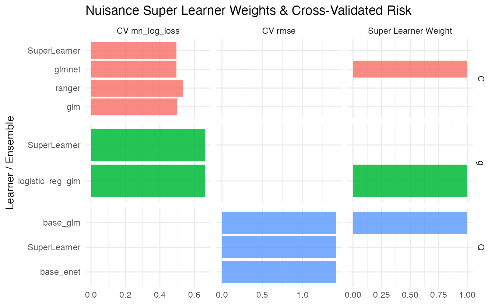

Composing Workflows, Recipes, and Guardrails
Source:vignettes/workflows-and-super-learning.Rmd
workflows-and-super-learning.RmdFor publication-grade pipelines, tidytmle accepts custom
recipes, parsnip model specifications,
workflows, and workflowsets::workflow_set
ensembles directly—while enforcing causal guardrails automatically.
Why cross-fitting and Super Learning matter here: Following Zheng & van der Laan (2011), pairing diverse candidate algorithms inside a single cross-validated Super Learner reduces the risk of model misspecification while out-of-fold predictions eliminate Donsker-class restrictions when using random forests, regularized regressions, or boosted trees.
Role-Aware Recipe Splitting & workflow_set Super
Learning
A common source of subtle bugs in manual causal ML pipelines is
accidentally leaking the treatment column
or cluster ID into the propensity model
when reusing a single recipe(y ~ ., data = df).
tidytmle automatically clones and adapts the preprocessing
recipe per nuisance factor (Q, g, and
C), guaranteeing that
is retained in
and
while strictly excluded from
’s
predictors:
library(tidytmle)
library(recipes)
library(parsnip)
library(workflowsets)
df <- sim_causal_cohort(
n = 350,
outcome_type = "continuous",
censoring_rate = 0.15,
n_clusters = 15L,
seed = 101
)
base_rec <- recipe(y ~ ., data = df) |>
step_impute_median(all_numeric_predictors()) |>
step_dummy(all_nominal_predictors()) |>
step_zv(all_predictors())
q_models <- list(
glm = linear_reg() |> set_engine("glm")
)
if (requireNamespace("glmnet", quietly = TRUE)) {
q_models$enet <- linear_reg(penalty = 0.05, mixture = 0.5) |> set_engine("glmnet")
} else {
q_models$lm <- linear_reg() |> set_engine("lm")
}
q_wf_set <- workflow_set(
preproc = list(base = base_rec),
models = q_models
)
g_spec <- logistic_reg() |> set_engine("glm")
fit_l2 <- tmle_spec(
outcome = y,
treatment = a,
covariates = c(age, sex, starts_with("lab_")),
censoring = delta,
id = clinic_id,
estimand = "ate"
) |>
set_preprocessing(base_rec) |>
set_outcome_learners(q_wf_set) |>
set_treatment_learners(g_spec) |>
set_resamples(v_folds = 5L) |>
fit(data = df)
fit_l2
#>
#> ── TMLE Fit Summary ──
#>
#> n = 350 (observed = 280) | 5-fold CV-TMLE | logistic fluctuation |
#> 2.37s | 15 clusters
#>
#> ── Causal Estimates
#> ATE est = 1.7415 (SE = 0.1383) 95% CI [1.4704, 2.0126] p = < 0.0001
#>
#> ── Nuisance Super Learners
#> Q Super Learner: R2 = 0.679 (weights: base_glm 1.00)
#> g Super Learner: AUC = 0.633 (weights: logistic_reg_glm 1.00)
#> C Super Learner: AUC = 0.661 (weights: glmnet 1.00)
#>
#> ── Diagnostics & Targeting Shift
#> Targeting shift (TMLE - plug-in): +0.0260 (epsilon = 0.0148)
#> ✔ All checks healthy: mean EIF = -1.05e-15, truncated = 0.6%, max EIF leverage = 2.8%.
extract_sl_weights(fit_l2)
#> # A tibble: 6 × 3
#> nuisance learner weight
#> <chr> <chr> <dbl>
#> 1 Q base_glm 1
#> 2 Q base_enet 0
#> 3 g logistic_reg_glm 1
#> 4 C glm 0
#> 5 C glmnet 1
#> 6 C ranger 0
autoplot(fit_l2, type = "learners")
Automatic Informative-Missingness Handling & Case Weights
When outcomes are missing (NA) selectively (for
instance, sicker patients dropping out of follow-up), silently
listwise-deleting incomplete rows introduces selection
bias. When censoring is omitted and
outcome contains NAs, tidytmle
automatically creates an observation indicator
and models informative missingness
,
incorporating
directly into the Clever Covariate.
Native hardhat::importance_weights() and
hardhat::frequency_weights() are likewise propagated
through both nuisance workflows and the cluster-robust EIF variance
estimator, and autoplot(fit, type = "balance") checks
whether IPW/TMLE weighting brings absolute standardized mean differences
(|SMD|) below the 0.10 balance guideline:
df_miss <- dplyr::select(df, -delta)
df_miss$survey_wt <- hardhat::importance_weights(runif(nrow(df_miss), 0.7, 1.5))
fit_auto_c <- tmle_spec(
outcome = y,
treatment = a,
covariates = c(age, sex, starts_with("lab_")),
id = clinic_id,
weights = survey_wt
) |>
set_resamples(v_folds = 5L) |>
fit(data = df_miss)
#> ! Detected 70 missing outcomes (20%); automatically introducing missingness indicator .delta and modeling C(A, W) = P(Delta = 1 | A, W) instead of listwise deletion.
summary(fit_auto_c)
#>
#> ── Plain-English TMLE Summary ──
#>
#> Sample: 350 rows (280 observed outcomes) | 5-fold CV-TMLE
#>
#> ── 1. What the Causal Estimates Mean
#> ℹ ATE (across the full population): Treatment increases the expected outcome by 1.5620 units (95% CI [1.2910, 1.8330], p = < 0.0001).
#>
#> ── 2. What the Targeting Step Did
#> Fluctuating along the Clever Covariate shifted the initial ML plug-in
#> estimate by +0.1437 (epsilon = 0.0215) to remove residual confounding
#> bias.
#>
#> ── 3. Statistical Health Check & Next Steps
#> ✔ Convergence: EIF estimating equation solved (mean EIF = -2.54e-16).
#> ✔ Positivity: 0.0% clipped at g_bounds [0.150, 0.850] (ESS: treated = 122.6, control = 126.9).
#> ✔ Influence: No single observation dominates variance (max EIF leverage = 4.1%).
glance(fit_auto_c)
#> # A tibble: 1 × 19
#> n n_observed n_clusters v_folds cv_tmle epsilon mean_eif
#> <int> <int> <int> <int> <lgl> <dbl> <dbl>
#> 1 350 280 15 5 TRUE 0.0215 -2.54e-16
#> # ℹ 12 more variables: plugin_vs_tmle_shift <dbl>, g_min <dbl>,
#> # g_max <dbl>, g_bound_low <dbl>, g_bound_high <dbl>,
#> # pct_truncated <dbl>, ess_treated <dbl>, ess_control <dbl>,
#> # max_eif_leverage <dbl>, q_metric <dbl>, g_auc <dbl>,
#> # g_log_loss <dbl>
autoplot(fit_auto_c, type = "balance")